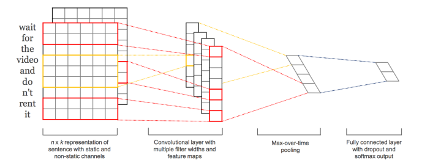
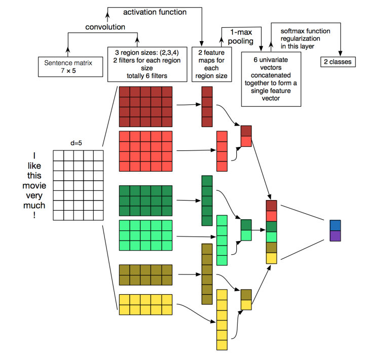
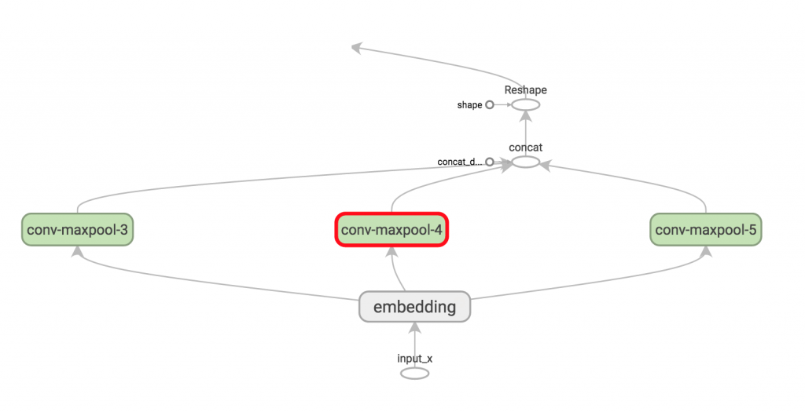
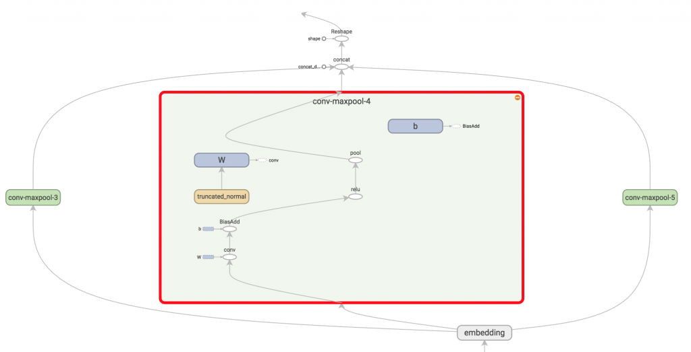
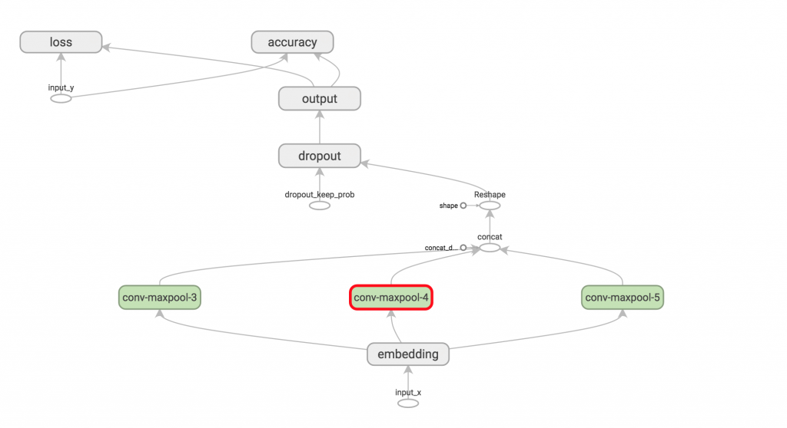

3.3 CNN分类
3.3.1 理论
本篇文章的题图选用的就是14年这篇文章Convolutional Neural Networks for Sentence Classification提出的TextCNN的结构（见下图）。fastText 中的网络结果是完全没有考虑词序信息的，而它用的 n-gram 特征 trick 恰恰说明了局部序列信息的重要意义。卷积神经网络（CNN Convolutional Neural Network）最初在图像领域取得了巨大成功，CNN原理就不讲了，核心点在于可以捕捉局部相关性，具体到文本分类任务中可以利用CNN来提取句子中类似 n-gram 的关键信息。  TextCNN的详细过程原理图见下：  TextCNN详细过程：第一层是图中最左边的7乘5的句子矩阵，每行是词向量，维度=5，这个可以类比为图像中的原始像素点了。然后经过有 filter_size=(2,3,4) 的一维卷积层，每个filter_size 有两个输出 channel。第三层是一个1-max pooling层，这样不同长度句子经过pooling层之后都能变成定长的表示了，最后接一层全连接的 softmax 层，输出每个类别的概率。
特征：这里的特征就是词向量，有静态（static）和非静态（non-static）方式。static方式采用比如word2vec预训练的词向量，训练过程不更新词向量，实质上属于迁移学习了，特别是数据量比较小的情况下，采用静态的词向量往往效果不错。non-static则是在训练过程中更新词向量。推荐的方式是 non-static 中的 fine-tunning方式，它是以预训练（pre-train）的word2vec向量初始化词向量，训练过程中调整词向量，能加速收敛，当然如果有充足的训练数据和资源，直接随机初始化词向量效果也是可以的。
注释：fine-tuning 的过程其实就是用训练好的参数（可以从已训练好的模型中获得）初始化自己的网络，然后用自己的数据接着训练
通道（Channels）：图像中可以利用 (R, G, B) 作为不同channel，而文本的输入的channel通常是不同方式的embedding方式（比如 word2vec或Glove），实践中也有利用静态词向量和fine-tunning词向量作为不同channel的做法。
一维卷积（conv-1d）：图像是二维数据，经过词向量表达的文本为一维数据，因此在TextCNN卷积用的是一维卷积。一维卷积带来的问题是需要设计通过不同 filter_size 的 filter 获取不同宽度的视野。
Pooling层：利用CNN解决文本分类问题的文章还是很多的，比如这篇 A Convolutional Neural Network for Modelling Sentences 最有意思的输入是在 pooling 改成 (dynamic) k-max pooling ，pooling阶段保留 k 个最大的信息，保留了全局的序列信息。比如在情感分析场景，举个例子：
" 我觉得这个地方景色还不错，但是人也实在太多了 "
虽然前半部分体现情感是正向的，全局文本表达的是偏负面的情感，利用 k-max pooling能够很好捕捉这类信息。
3.3.2 用tensorflow跑CNN文本分类
这部分翻译了一篇2015年的博客Implementing a CNN for Text Classification in TensorFlow,完整的代码可以在github(https://github.com/dennybritz/cnn-text-classification-tf)获取 。
这篇文章我们将跑一个类似Kim Yoon的Convolutional Neural Networks for Sentence Classification.本文提出的模型在一系列文本分类任务(如情感分析)中实现了良好的分类性能，并已成为新的文本分类体系结构的标准baseline。
假定你熟悉基本的CNN应用在NLP的原理，如果不懂，推荐你首先阅读Understanding Convolutional Neural Networks for NLP来获得必要的背景知识。
数据和预处理
这篇文章所用的数据集是Movie Review data from Rotten Tomatoes。这是用在原始论文中的一个数据集。这个数据集包含10662个评论，一半好评，一半差评， 大约有20k个词的词典。显然，这个数据集很小，用一个powerful模型很有可能过拟合。所以，数据集没有正式的训练/测试分割，所以我们只使用10%的数据作为验证集。原始论文报告了对数据进行10折交叉验证的结果。
我不会在这篇文章中详细介绍数据预处理代码，但它可以在Github上获得，做了以下操作:
- 从原始数据文件中加载好评与差评的句子
- 用与原始论文中相同的代码清洗文本数据
- 扩充(Pad) 每一个句子到最大的句子长度，最大是59。我们增加特殊的
tokens 到所有其他的句子中，使所有的句子都有59个单词。填充句子是有用的，可以允许我们有效的batch我们的数据，因为每一个batch内的样本必须长度相同 - 建立一个词典索引， 映射每一个词到一个整数从0到 18,765（词典大小）。每一个句子变成一个整数的向量。
模型
我们所建的这个网络，看起来如上面的下图所示。
第一层是embedding后的低维的词向量。第二层是卷积层，用多个filter sizes的filter对词向量做卷积，第三次是 对卷积层 max-pool，得到一个长长的特征向量，增加dropout 正则，然后用softmax层输出结果。
因为这是一个educational(示例)博客，我决定与原始论文相比，简化一下这个模型：
- 我们将不使用预先训练的word2vec向量为我们的词嵌入。相反，我们从头开始学习嵌入式。
- 我们不会对权重向量施加L2范数约束。对卷积神经网络进行句子分类的敏感性(Sensitivity)分析(以及从业人员指南)发现，约束对最终结果影响不大。
- 原始论文对输入数据 进行静态（static）和非静态（non-static）两种方式实验，我们只用了一种。
将上述扩展添加到这里的代码中相对简单(几十行代码)。请看文章末尾的练习。
让我们开始写代码！
实现过程
为了允许各种超参数配置，我们将代码放入TextCNN类中，在init函数中生成模型图。
import tensorflow as tf
import numpy as np
class TextCNN(object):
"""
A CNN for text classification.
Uses an embedding layer, followed by a convolutional, max-pooling and softmax layer.
"""
def __init__(
self, sequence_length, num_classes, vocab_size,
embedding_size, filter_sizes, num_filters):
为了实例化类，我们然后传递以下参数:
- sequence_length - 句子长度.记住我们填充所有的句子使得有相同的长度（这个数据集是59）。
- num_classes - 输出层的类别个数，这个案例中是两个(好评与差评)
- vocab_size - 词典大小. 需要定义embedding层的size, shape是[vocabulary_size, embedding_size]
- embedding_size - embedding的维度
- filter_sizes - 卷积filter覆盖的词的个数。我们对每一个size都有 num_filters(num个过滤器)。例如[3, 4, 5]意味着我们有多个过滤器滑过3、4、5个单词，所以我们总共有3*num_filters个过滤器(filters)
- num_filters - 每个size 的过滤器个数(看上面)
输入Placeholders(Input Placeholders)
我们开始定义这个网络的输入数据
# Placeholders for input, output and dropout
self.input_x = tf.placeholder(tf.int32, [None, sequence_length], name="input_x")
self.input_y = tf.placeholder(tf.float32, [None, num_classes], name="input_y")
self.dropout_keep_prob = tf.placeholder(tf.float32, name="dropout_keep_prob")
tf.placeholder 创造一个placeholder变量，当我们执行train， 或者test的时候，会喂给网络。第二个参数是输入张量的shape。None意味着可以是任何值。在我们的例子中，第一个维度是batch的大小，None允许处理任意大小的batch。
dropout层的保留神经元的概率也是网络的一个输入，因为我只在训练的时候允许dropout, 在评估模型的时候不允许dropout（或者更晚的时候）
Embedding 层
我们定义第一层是embedding层， 把词典词索引映射到低维的向量表示。本质上是从数据中学到的lookup table。
with tf.device('/cpu:0'), tf.name_scope("embedding"):
W = tf.Variable(
tf.random_uniform([vocab_size, embedding_size], -1.0, 1.0),
name="W")
self.embedded_chars = tf.nn.embedding_lookup(W, self.input_x)
self.embedded_chars_expanded = tf.expand_dims(self.embedded_chars, -1)
这里用了一些新的特性， 让我们回顾一下：
- tf.device("/cpu:0")强迫用CPU执行操作。默认的是用GPU执行，如果有至少一个GPU的话。但是当前embedding不支持GPU, 如果用GPU的话，会报错。
- tf.name_scope创造一个命名空间,命名为embedding。这个命名空间把所有操作放在一个叫embedding的顶级节点，当你在TensorBoard可视化你的网络时候，得到一个漂亮的层次结构。
W是训练的时候学习到的embedding矩阵。我们用均匀分布随机初始化。 tf.nn.embedding_lookup创造一个实际的embedding操作。这个embedding操作的结果是一个三维的张量 [None, sequence_length, embedding_size].
TensorFlow的二维卷积conv2d要求一个四维张量，顺序是[batch, width, height, channel]。我们的embedding的结果不包含channel维，所以需要手动加上它， 维度就变为[None, sequence_length, embedding_size, -1]。
卷积和池化层
现在我们准备建立卷积层，然后是最大池化层。我们用不同size的filters。因为每一个卷积产生不同形状的张量，我们需要迭代他们，为每个张量创建一个层，然后将结果合并成一个大的特征向量。
pooled_outputs = []
for i, filter_size in enumerate(filter_sizes):
with tf.name_scope("conv-maxpool-%s" % filter_size):
# Convolution Layer
filter_shape = [filter_size, embedding_size, 1, num_filters]
W = tf.Variable(tf.truncated_normal(filter_shape, stddev=0.1), name="W")
b = tf.Variable(tf.constant(0.1, shape=[num_filters]), name="b")
conv = tf.nn.conv2d(
self.embedded_chars_expanded,
W,
strides=[1, 1, 1, 1],
padding="VALID",
name="conv")
# Apply nonlinearity
h = tf.nn.relu(tf.nn.bias_add(conv, b), name="relu")
# Max-pooling over the outputs
pooled = tf.nn.max_pool(
h,
ksize=[1, sequence_length - filter_size + 1, 1, 1],
strides=[1, 1, 1, 1],
padding='VALID',
name="pool")
pooled_outputs.append(pooled)
W是filter的矩阵，h是非线性卷积的输出结果。每一个filter在这个那个embedding矩阵上滑动，但是覆盖的单词数不同。"VALID"表示我们滑动filter，不必去填充边界，得到一个窄的卷积，形状为[1, sequence_length - filter_size + 1, 1, 1]。在输出的卷积结果上做最大池化，得到一个shape为[batch_size, 1, 1, num_filters]。这个本质上是一个特征向量，最后一维对应我们的特征。一旦我们有了所有的池化后的每一个filter size的张量，我们拼接她们，得到一个长的特征向量，shape为[batch_size, num_filters_total]。在tf.reshape中用-1告诉tf尽可能的平铺维度(拉直)。
花一些时间尝试理解每一个操作的输出维度。你也可以回头参考Understanding Convolutional Neural Networks for NLP来得到一些直觉。用TensorBoard来可视化这些操作也能帮助我们(例如filter size为3、4、5).  
Dropout层
Dropout也许是最流行的神经网络正则化方法。dropout的思想是非常简单的。dropout层随机的让一部分神经元失活，这就阻止了神经元的相互适应(co-adapting)，并迫使它们学习各自有用的特征。我们保持激活的神经元的比例是由网络的dropout_keep_prob输入定义的。我们在训练时将其设置为0.5，在评估时设置为1(禁用dropout)。
# Add dropout
with tf.name_scope("dropout"):
self.h_drop = tf.nn.dropout(self.h_pool_flat, self.dropout_keep_prob)
打分和预测
用最大池化后的特征向量(应用dropout)，我们可以通过矩阵乘法和选择得分最高的类来生成预测。我们还可以应用softmax函数将原始分数转换为标准化概率，但这不会改变我们的最终预测。
with tf.name_scope("output"):
W = tf.Variable(tf.truncated_normal([num_filters_total, num_classes], stddev=0.1), name="W")
b = tf.Variable(tf.constant(0.1, shape=[num_classes]), name="b")
self.scores = tf.nn.xw_plus_b(self.h_drop, W, b, name="scores")
self.predictions = tf.argmax(self.scores, 1, name="predictions")
这里, tf.nn.xw_plus_b 是执行 Wx + b 矩阵乘法的一个方便的函数。
损失和准确性(Loss and Accuracy)
用预测得分，我我们可以定义损失函数，损失是对网络所犯错误的一种度量，我们的目标是将其最小化。分类问题的标准损失函数是交叉熵损失。
# Calculate mean cross-entropy loss
with tf.name_scope("loss"):
losses = tf.nn.softmax_cross_entropy_with_logits(self.scores, self.input_y)
self.loss = tf.reduce_mean(losses)
这里tf.nn.softmax_cross_entropy_with_logits是为每一个类别计算交叉熵的简便的函数，输入是预测得分与label。然后求损失的均值，我们也可以使用总和，但是比较不同的batch size 和 训练集/验证集的损失 会很困难。
我们还定义了一个准确性的表达式，这是一个在训练和测试期间需要跟踪的有用的量。
# Calculate Accuracy
with tf.name_scope("accuracy"):
correct_predictions = tf.equal(self.predictions, tf.argmax(self.input_y, 1))
self.accuracy = tf.reduce_mean(tf.cast(correct_predictions, "float"), name="accuracy")
网络可视化
到这儿，我们已经完成了网络的定义。 完整的代码可以在这里获取。我们可以通过TensorBoard可视化这个网络，获得一张大图。 
训练过程
在定义网络的训练过程之前，我们需要了解TensorFlow如何使用Sessions和Graphs的基本知识。如果你已经熟悉这些概念可以跳过本节。在TensorFlow中，Session是执行Graphs操作的环境，它包含变量和队列的状态。每一个Session操作一个Graph。如果你在创建变量和操作时没有显示的指定Session, 则使用Tensorflow创建的当前默认的Session。您可以通过在session.as_default()块中执行命令来更改默认会话(见下面)。
Graph包含操作和张量。您可以在程序中使用多个Graph，但是大多数程序只需要一个Graph。您可以在多个session中使用相同的Graph，但不能在一个session*中使用多个Graph。TensorFlow总是创建一个默认Graph，但是您也可以手动创建一个Graph，并将其设置为新的默认值，如下所示。显式地创建session和*Graph可以确保在不再需要资源时正确地释放资源。
with tf.Graph().as_default():
session_conf = tf.ConfigProto(
allow_soft_placement=FLAGS.allow_soft_placement,
log_device_placement=FLAGS.log_device_placement)
sess = tf.Session(config=session_conf)
with sess.as_default():
# Code that operates on the default graph and session comes here...
allow_soft_placement设置允许TensorFlow在首选设备不存在的情况下，返回到具有特定操作的设备上执行。例如，如果我们的代码在GPU上放置了一个操作，并且我们在没有GPU的机器上运行代码，不使用allow_soft_placement将会导致错误。如果设置了log_device_placement，则TensorFlow日志记录它放置操作的设备(CPU或GPU)。这对于调试非常有用。FLAGS是程序的命令行参数。
实例化CNN并最小化损失
当我们实例化TextCNN模型时，所有定义的变量和操作将被放置到我们在上面创建的默认Graph和*session中。
cnn = TextCNN(
sequence_length=x_train.shape[1],
num_classes=2,
vocab_size=len(vocabulary),
embedding_size=FLAGS.embedding_dim,
filter_sizes=map(int, FLAGS.filter_sizes.split(",")),
num_filters=FLAGS.num_filters)
接下来，我们定义如何优化我们的网络的损失函数。TensorFlow有几个内置的优化器。我们正在使用adam优化器。
global_step = tf.Variable(0, name="global_step", trainable=False)
optimizer = tf.train.AdamOptimizer(1e-4)
grads_and_vars = optimizer.compute_gradients(cnn.loss)
train_op = optimizer.apply_gradients(grads_and_vars, global_step=global_step)
这里，train_op是一个新创建的操作，我们可以运行它来对参数执行梯度更新。train_op的每次执行都是一个训练步骤。TensorFlow自动计算出哪些变量是“可训练的”，并计算出它们的梯度。通过定义global_step变量并将其传递给优化器，我们允许TensorFlow为我们对训练步骤的计数。每次执行train_op时，global_step将自动增加1。
Summaries
TensorFlow有一个summaries的概念，它允许您在训练和评估期间跟踪和可视化各种指标。例如，您可能希望跟踪您的损失和准确性是如何随时间变化的。您还可以跟踪更复杂的指标，例如层激活的直方图。summaries是序列化的对象，它们使用SummaryWriter写入磁盘。
# Output directory for models and summaries
timestamp = str(int(time.time()))
out_dir = os.path.abspath(os.path.join(os.path.curdir, "runs", timestamp))
print("Writing to {}\n".format(out_dir))
# Summaries for loss and accuracy
loss_summary = tf.scalar_summary("loss", cnn.loss)
acc_summary = tf.scalar_summary("accuracy", cnn.accuracy)
# Train Summaries
train_summary_op = tf.merge_summary([loss_summary, acc_summary])
train_summary_dir = os.path.join(out_dir, "summaries", "train")
train_summary_writer = tf.train.SummaryWriter(train_summary_dir, sess.graph_def)
# Dev summaries
dev_summary_op = tf.merge_summary([loss_summary, acc_summary])
dev_summary_dir = os.path.join(out_dir, "summaries", "dev")
dev_summary_writer = tf.train.SummaryWriter(dev_summary_dir, sess.graph_def)
这里，我们分别保持追踪训练与评估的summaries。在这个例子中，它们是相同的，但是你也可能仅仅想在训练过程中追踪一些指标(比如参数更新值). tf.merge_summary是一个方便的函数，它将多个summaries操作合并到一个可以执行的操作中。
检查点(Checkpointing)
你通常想使用的TensorFlow的另一个特性是checkpointing-保存模型参数，以便稍后恢复它们。checkpoints可以用来一段时间后继续训练模型，或者用early stopping选择最佳参数设置。checkpoints用Saver对象创建。
# Checkpointing
checkpoint_dir = os.path.abspath(os.path.join(out_dir, "checkpoints"))
checkpoint_prefix = os.path.join(checkpoint_dir, "model")
# Tensorflow assumes this directory already exists so we need to create it
if not os.path.exists(checkpoint_dir):
os.makedirs(checkpoint_dir)
saver = tf.train.Saver(tf.all_variables())
初始化变量
在训练模型之前，我们还需要初始化Graph中的变量。
sess.run(tf.initialize_all_variables())
函数initialize_all_variables是一个方便的函数，对我们定义的所有变量进行初始化。你还可以手动变量的初始化器，例如你想用预训练的值去初始化embedding。
定义一个单独的训练步骤(a single training step)
现在让我们为单独训练步骤定义一个函数，在一个batch的数据上评估模型和更新模型参数。
def train_step(x_batch, y_batch):
"""
A single training step
"""
feed_dict = {
cnn.input_x: x_batch,
cnn.input_y: y_batch,
cnn.dropout_keep_prob: FLAGS.dropout_keep_prob
}
_, step, summaries, loss, accuracy = sess.run(
[train_op, global_step, train_summary_op, cnn.loss, cnn.accuracy],
feed_dict)
time_str = datetime.datetime.now().isoformat()
print("{}: step {}, loss {:g}, acc {:g}".format(time_str, step, loss, accuracy))
train_summary_writer.add_summary(summaries, step)
feed_dict包含为placeholder节点准备的数据，传入我们的网络。你必须喂给所有的placeholder```相应数据，否则TensorFlow会报错。
注：tf中的卷积函数
- 计算N维卷积的和的函数tf.nn.convolution()
tf.nn.convolution(input,filter,padding,strides=None,dilation_rate=None,name=None,data_format=None) 对一个四维的输入数据input和四维的卷积核filter进行操作，然后对输入数据进行一个二维的卷积操作，最后得到卷积之后的结果。
tf.nn.conv2d(input,filter, strides, padding, use_cudnn_on_gpu=None, name=None)- input:为一个Tensor，数据类型必须是float32或者float64
- filter:为一个tensor,数据类型必须是与input输入的数据类型相同；
- strides:一个长度是4的一维整数类型数组，每一维度对应的是input中每一维的对应移动步数；如strides[1]对应input[1]的移动步数；
- padding：一个字符串，取值为SAME或者VALID；‘SAME'适用于全尺寸操作，即输入数据维度和输出数据维度相同；'VALID'适用于部分窗口；
- use_cudnn_on_gpu:一个可选布尔值，默认情况下是True;
- name:为这个操作取一个名字；
- input的张量维度[batch, in_height, in_width, in_channels),若输入的图像为9*9的彩色图像(RGB)，则张量为[batch,9,9,3],其中黑白图像的通道为1，彩色图像为3，batch为输入的图像数量
- filter为卷积核，filter[filter_height, filter_width, in_channels, out_channels]的shape,这个是以conv2d为例；其中对应的含义分别为：[卷积核的高度，卷积核的宽度，图像通道数，卷积核个数] 在使用过程中，通常不对input的第一维和第四维进行卷积操作，所以通常strides一般为[1,X,X,1]